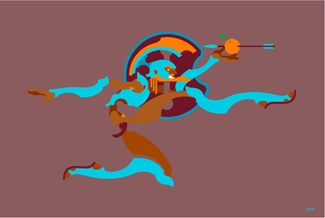
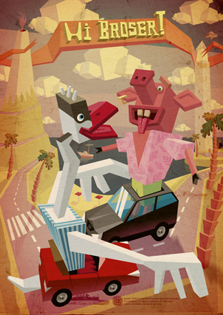
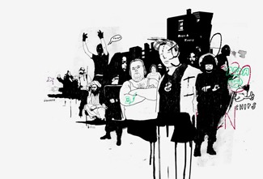
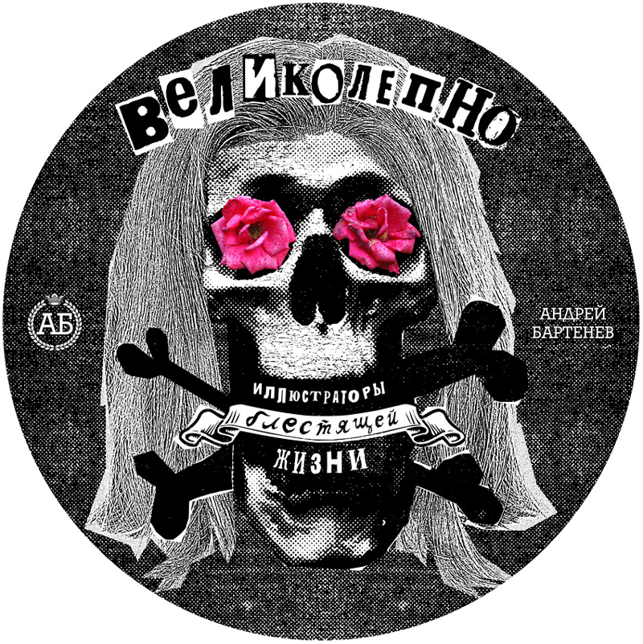
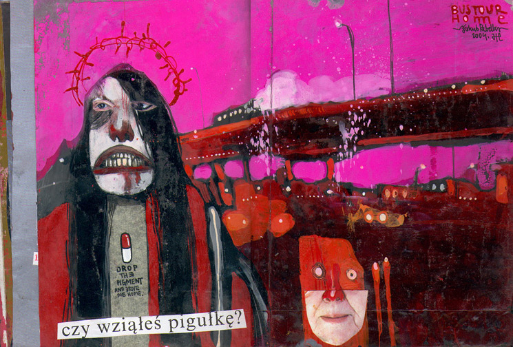
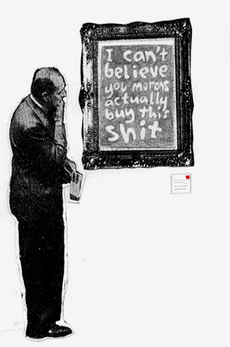
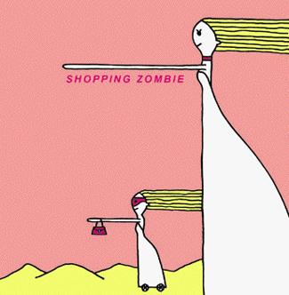

ЗЛОБА КАК ИНСТРУМЕНТ
Все на продажу
За размышлениями о судьбах современной иллюстрации (ну, и прочими делами) едва успеваешь полазать по сети просто так. Не обессудьте, коллеги, я редко слежу за вашими новыми работами — потому, почти не надеюсь удивиться (эта маленькая хитрость помогает мне при случае удивиться очень). И вот, пока я тут поднываю про то, как нам догнать Америку, люди, как говорят в Крыму, «делают вещи». В частности, нашелся еще один замечательный коллективный календарь. В основном все в своем репертуаре, но вот, например, Алексей Шимульский, известный своей векторной кулинарией, неожиданно мощно задвигал руками и ногами. Пока, правда, одинаковыми, но тенденция самая положительная.

Денис Петруленков, и без того глыба, перешел на какой-то совершенно распрекрасный вектор. Недельку повисит на десктопе а там попробую, пожалуй, своровать.

Кстати, недавно он еще зачем-то сделал Тома Уэйтса для Rolling Stone в манере (технике?), уловимо напоминающей А. Житомирского, известного как Gonduras. Я так понимаю, это тень арт-директора, но тоже, позитивный прецедент. Приятно осознавать, что в рамках русскоязычной иллюстрации наличествуют свои какие-то течения и моды.
*
Так вот, размышления мои о судьбах современной иллюстрации всколыхнула вот эта «новость» на kak.ru.

David Foldvari (отдельная модность: много всего в кучу и снизу подтекает. A la граффити) Пожалуйста вам, человек рисует для Nike. Допустим, не именно вот это вот, и на сайте у него есть вполне мирные вещи, но все-таки, все-таки. Время такое — все на продажу. Куда ни кинь — всюду бренд. Панк есть коллекция Вивьен Вествуд.

Чтобы задеть за живое, быть просто жестким (злым) нынче категорически мало. Быть жестким — это жанровое упражнение. «Жестик», как говорят в Крыму.

rebelka.com В вольном переводе с английского, «бунтарёк». Меня, впрочем, задел.
Если вдуматься, даже самый беспринципный (а по мне, так единственный по-настоящему выдающийся) представитель современного искусства, «арт*-террорист», Бэнкси — в идеологическом плане не более, чем ловкий жонглер смыслами, пусть даже запретными.

В искусстве, конечно, встречается тот самый «острый социальный комментарий»- другое дело, не чужд ли он ему как таковому. Если возвратить разговор в плоскость иллюстрации, речь о том, что эмоциональная окраска — всего лишь еще один инструмент художника. Как цвет, только сложнее в использовании. Пройдет совсем немного времени и кто-нибудь непременно нарисует новый цветовой круг разместив на нем всю гамму человеческих эмоций и указав им правила сочетания. Хотя я в основном график, мне представляется, что работать всю жизнь одной краской — скучно. Тем более какой-нибудь фиолетовой. Это, нужно сказать, широко распространенная практика. Особенно распространены отчего-то как раз художники (-цы, главным образом) снедаемые неизбывной тоской. Каждым движением пера они тщатся разделить ее со всем миром (примеров вы сами при желании отыщете без труда). А я человек эмоциональный, сопереживаю. Так иногда, кажется, и поддержал бы кого в суицидальных наклонностях. И напротив, как у Маяковского, «Тот, кто постоянно ясен, тот, по-моему, просто глуп». Правда, «ясен» я бы предложил по прошествии ста без малого лет заменить на «светел». Ясность нам с вами вещь необходимая совершенно.

* кто бы знал, как я не-на-вижу этот триграмматон. С полтора года назад я раскрашивал вестибюль одного московского заведения, радуясь про себя, что вот я — художник, искусством занимаюсь, не чем-нибудь. И некий посетитель, проходя мимо, сказал спутнице: «Смотри, арт-дизайнер!». В данном случае приходится пользоваться ровно потому, что локализация втрое длиннее.